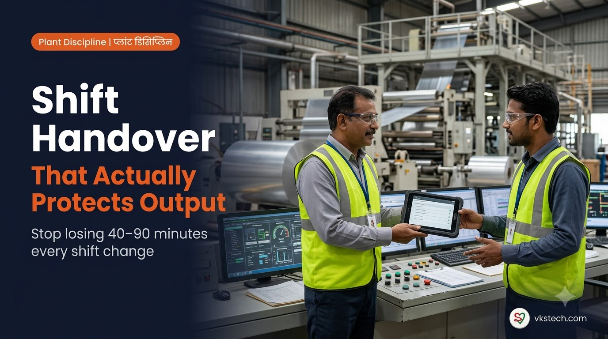
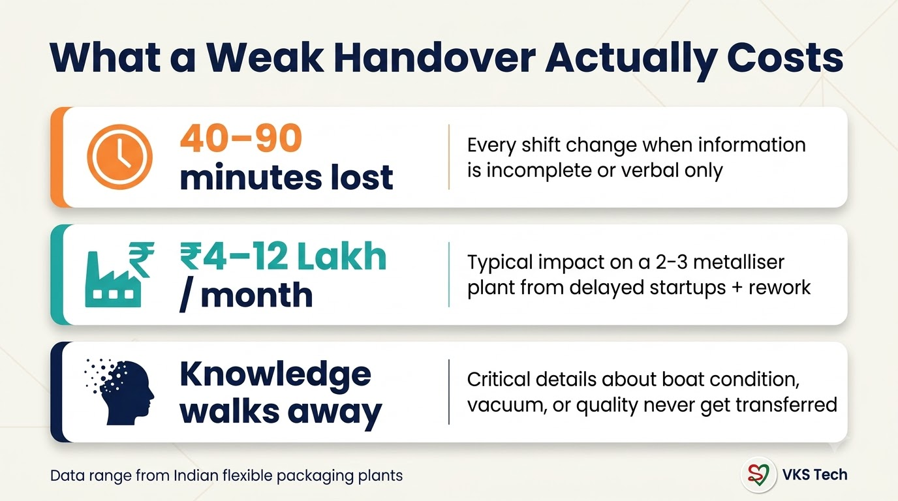
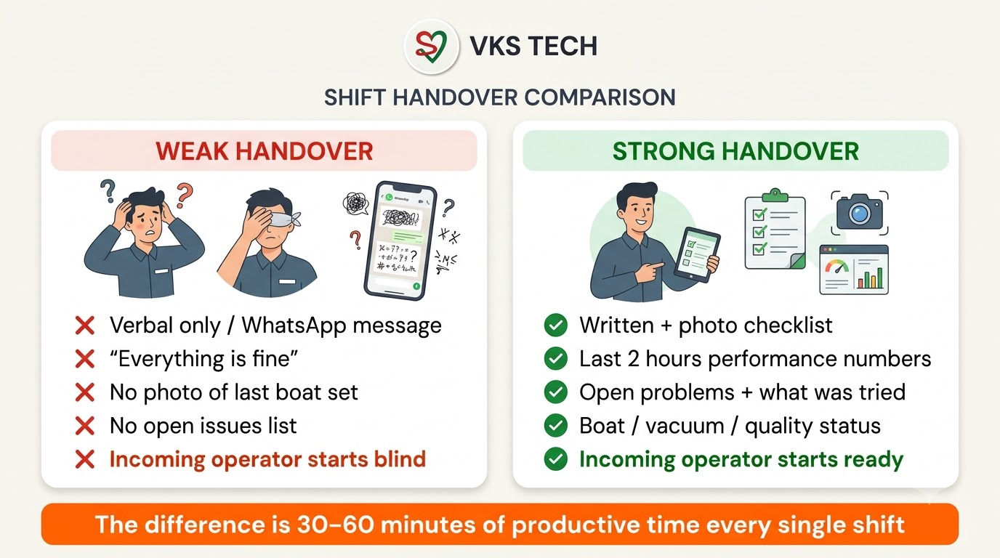
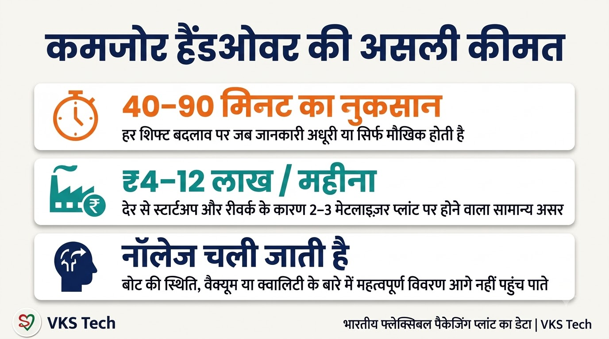
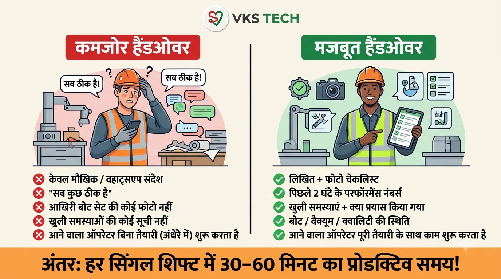

🔄 Shift Handover Discipline That Actually Protects Output
📖 11-min read | Plant Discipline Guide | Simple language, real impact
Most plants lose money not during the shift — but at the moment one shift ends and the next begins.
A weak handover looks small. Someone says “everything is fine”, the next operator nods, and production continues. But 40 to 90 minutes later you discover the vacuum was already drifting, the last boat set was weak, or a quality issue was known and never written down.
This blog shows a simple, practical way to fix shift handover so that every new shift starts ready — not guessing.
Why Handovers Fail in Real Plants
Three common reasons:
- It is only verbal — “Sab theek hai” is not information.
- No standard format — Every operator writes (or says) different things.
- No accountability — There is no record of what was told and what was missed.
When the incoming operator is new or less experienced, the damage is even bigger. This is exactly why the skill matrix we discussed in the previous blog matters — but even skilled operators need clean information.

What a Strong Handover Must Contain
Keep it short. Five things are enough:
- Machine status right now — Running / stopped / planned stop. Current recipe and speed.
- Last 2 hours performance — OD trend, any alarms, any quality observations.
- Boat & vacuum condition — How many hours on current boats? Any unusual behaviour? Vacuum level trend.
- Open problems — What is not fully solved? What was already tried?
- Photos — One photo of the last boat set removed (if changed) and one of the current screen/control panel if something looks unusual.
That’s it. No long story. Just clear facts.

How to Make It Stick (Practical System)
A good format is useless if people don’t use it. Here’s a simple system that works in Indian plants:
1. Make the checklist digital and short
Paper gets lost. WhatsApp messages get buried. A short digital checklist that the outgoing operator fills in 3–4 minutes works much better.
Man Power App already supports structured shift information and can be used to make handover part of the daily routine. When the outgoing operator marks the shift end, the key points can be captured and the incoming operator can see them immediately on their phone.
2. Link it to the skill matrix
Operators who are still in “Learning” or “Practising” status need stricter handover. Competent operators can work with a lighter version. This is where the Skill Matrix inside Man Power becomes powerful — you can see who needs extra support during shift change.
3. Review once a week
Every week, pick 2–3 handovers at random. Ask only one question: “Did the incoming operator start without surprises?” If the answer is no, improve the checklist — don’t blame the people.
4. Use free modules for new operators
New or less experienced metallizer operators should complete the relevant free modules in the Mentor App (especially Met Train Pro and shift-related topics). A good handover + basic process understanding is a strong combination.
• Man Power — Structured shift data, skill matrix, clear who is on which shift, and space for handover notes
• Mentor App — Free modules so new operators understand what good process looks like + 1:1 coaching when needed
• PackLink — When you need to hire experienced people who already understand disciplined handover culture
30-Day Simple Implementation Plan
Week 1
Write the 5-point handover checklist. Make it fit on one mobile screen. Trial it on one metalliser only.
Week 2
Train all operators on that machine. Make the checklist compulsory for both outgoing and incoming. Collect feedback — what is missing or unnecessary?
Week 3
Roll out to all metallisers. Start using Man Power so the information is visible to the next shift and to the supervisor.
Week 4
Review results. Measure average time from shift start to stable running. Compare with the previous month. Adjust the checklist if needed.
Most plants that follow this simple cycle see a clear reduction in “surprise” problems in the first hour of the shift within 30–45 days.
Key Takeaway
Want a ready format for the 5-point checklist or help setting it up inside Man Power? Start with the free modules in the Mentor App or book a short session if your team needs guidance.
🔄 शिफ्ट हैंडओवर डिसिप्लिन जो वास्तव में आउटपुट बचाती है
📖 12-min read | प्लांट डिसिप्लिन गाइड | सरल भाषा, असली असर
ज्यादातर प्लांट पैसे शिफ्ट के दौरान नहीं गवाते — बल्कि उस पल गवाते हैं जब एक शिफ्ट खत्म होती है और अगली शुरू होती है।
कमजोर हैंडओवर छोटा लगता है। कोई बोलता है “सब ठीक है”, अगला ऑपरेटर सिर हिलाता है, और प्रोडक्शन चलती रहती है। लेकिन 40 से 90 मिनट बाद पता चलता है कि वैक्यूम पहले से ड्रिफ्ट कर रहा था, आखिरी बोट सेट कमजोर था, या क्वालिटी की समस्या पता थी लेकिन लिखी नहीं गई।
यह ब्लॉग एक सरल और व्यावहारिक तरीका बताता है जिससे शिफ्ट हैंडओवर ठीक हो और हर नई शिफ्ट अनुमान लगाए बिना तैयार शुरू हो।
वास्तविक प्लांट्स में हैंडओवर क्यों फेल होता है
- सिर्फ मौखिक रहता है — “सब ठीक है” जानकारी नहीं है।
- कोई स्टैंडर्ड फॉर्मेट नहीं — हर ऑपरेटर अलग-अलग बातें बताता है।
- जवाबदेही नहीं — क्या बताया गया और क्या छूट गया, इसका कोई रिकॉर्ड नहीं।

मजबूत हैंडओवर में क्या होना चाहिए
छोटा रखें। पाँच बातें काफी हैं:
- अभी मशीन की स्थिति — चल रही / रुकी / प्लान्ड स्टॉप। वर्तमान रेसिपी और स्पीड।
- पिछले 2 घंटे का परफॉर्मेंस — OD ट्रेंड, कोई अलार्म, कोई क्वालिटी ऑब्जर्वेशन।
- बोट और वैक्यूम की स्थिति — वर्तमान बोट्स पर कितने घंटे? कोई अजीब व्यवहार? वैक्यूम लेवल ट्रेंड।
- खुली समस्याएँ — क्या पूरी तरह हल नहीं हुआ? क्या पहले ही कोशिश की जा चुकी है?
- फोटो — आखिरी बोट सेट की एक फोटो (अगर बदला हो) और अगर कुछ असामान्य लगे तो कंट्रोल पैनल की एक फोटो।

इसे कैसे टिकाऊ बनाएं
1. चेकलिस्ट डिजिटल और छोटी रखें
कागज खो जाता है। व्हाट्सएप संदेश दब जाते हैं। 3–4 मिनट में भरने वाली छोटी डिजिटल चेकलिस्ट बेहतर काम करती है।
Man Power App पहले से स्ट्रक्चर्ड शिफ्ट जानकारी सपोर्ट करता है। आउटगोइंग ऑपरेटर जब शिफ्ट एंड करता है तो मुख्य पॉइंट्स कैप्चर हो सकते हैं और इनकमिंग ऑपरेटर को तुरंत अपने फोन पर दिख सकते हैं।
2. स्किल मैट्रिक्स से जोड़ें
जो ऑपरेटर अभी “Learning” या “Practising” स्टेटस में हैं, उन्हें सख्त हैंडओवर चाहिए। सक्षम ऑपरेटर हल्के वर्जन से काम चला सकते हैं। Man Power का स्किल मैट्रिक्स यहाँ काम आता है।
3. हफ्ते में एक बार रिव्यू करें
हर हफ्ते 2–3 हैंडओवर रैंडम चुनें। सिर्फ एक सवाल पूछें: “क्या इनकमिंग ऑपरेटर बिना सरप्राइज के शुरू हुआ?” अगर जवाब नहीं है, तो चेकलिस्ट सुधारें — लोगों को दोष न दें।
4. नए ऑपरेटरों के लिए फ्री मॉड्यूल्स
नए या कम अनुभव वाले मेटलाइज़र ऑपरेटरों को Mentor App के फ्री मॉड्यूल्स (खासकर Met Train Pro) पूरे करने चाहिए।
• Man Power — स्ट्रक्चर्ड शिफ्ट डेटा, स्किल मैट्रिक्स, हैंडओवर नोट्स
• Mentor App — फ्री मॉड्यूल्स + जरूरत पड़ने पर 1:1 कोचिंग
• PackLink — अनुभवी लोगों को हायर करना जो डिसिप्लिंड हैंडओवर कल्चर समझते हों
मुख्य निष्कर्ष
5-पॉइंट चेकलिस्ट का तैयार फॉर्मेट चाहिए या Man Power में सेटअप कराने में मदद? Mentor App के फ्री मॉड्यूल्स से शुरू करें या जरूरत हो तो छोटा सेशन बुक करें।